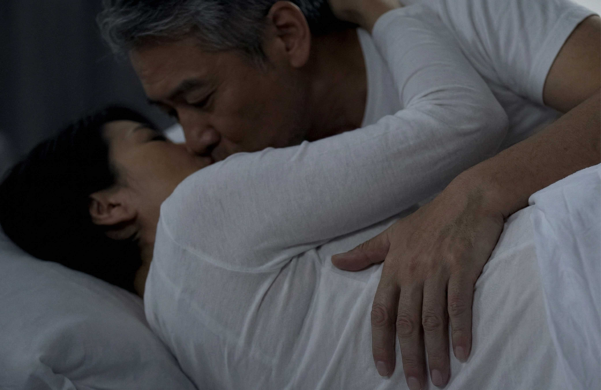
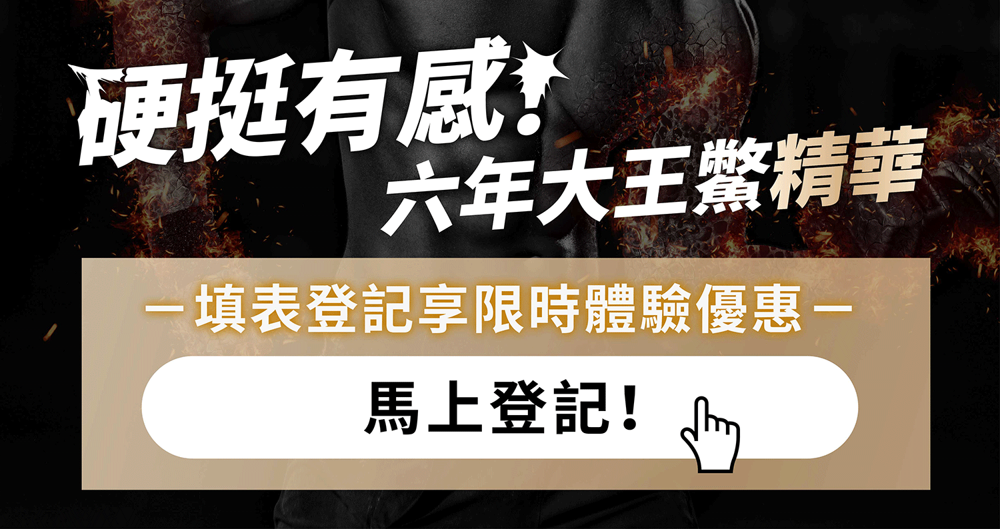
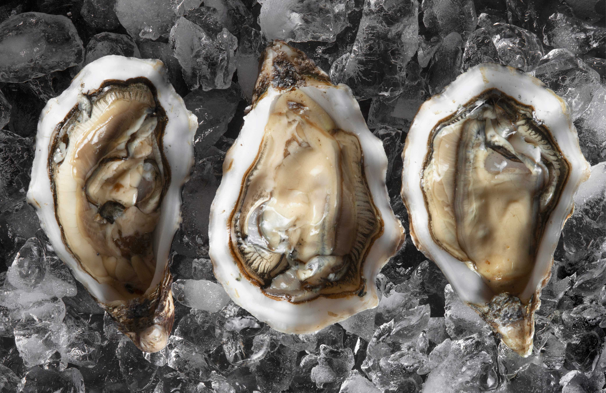
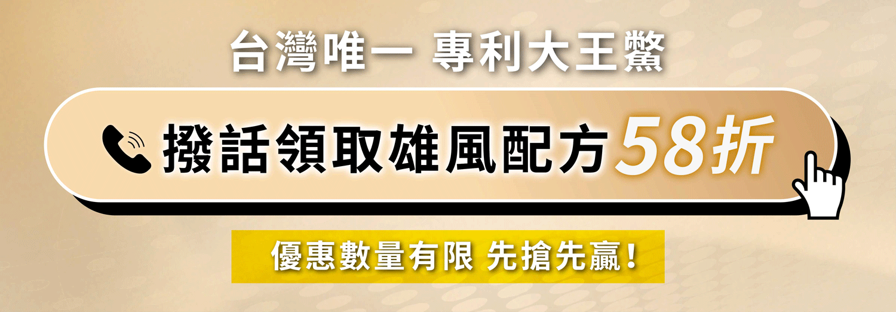

一到晚上就心虛？45歲工程師自爆：「不是我不愛，是身體跟不上了…」
「以前加班到凌晨，回家老婆一句話，我還是撐得起來。現在連抱她，都有點心虛。」 45歲的阿國，是科技業工程師，薪水不錯、房子車子都有，卻怎麼也沒想到，有一天他會輸在男人最不想輸的地方。
一開始，只是偶爾「沒狀態」，後來，從偶爾變成「常常」，甚至開始會逃避太太的眼神。
「她沒有說什麼，但我看得出來，她失望、也難過。」阿國苦笑說。
為了這件事，阿國上網找偏方、猛吞保健品，威而鋼、犀利士、賽倍達，阿國都試過了，甚至還偷偷買來路不明的藥丸，
結果只換來心悸、頭暈、臉爆紅，吃到後來，原本的劑量已經沒辦法像一開始那樣有感覺，每天越吃越多顆，
除了沒有真正改善問題，體檢報告的肝腎指數也弄得整排紅字，不但越來越沒自信，還賠掉了健康。
「最可怕的不是軟，而是心都垮了。」他說。
雄風「慢慢不行」的3大關鍵
男性機能走下坡，絕不是單一問題，而是好多因素一起發生：
1. 血流不夠順，硬度自然不給力
年紀一到、作息又亂，加上抽菸、熬夜、壓力大，血管彈性變差、循環變慢，「那個地方」要充血就更吃力。
外表看起來只是「沒那麼硬挺」，背後其實是全身循環在抗議。
2. 荷爾蒙下滑，慾望跟著冷卻
睪固酮是男人的「戰鬥荷爾蒙」，過了 35 歲之後自然慢慢下降，如果再加上熬夜、肥胖、壓力堆疊，
慾望會從「主動拉著另一半」變成「算了，明天再說」。
久而久之，不只是生理，連心理都進入「懶得面對」模式。
3. 精氣神被生活掏空
長期疲勞、睡不好、腦袋一直在想工作，身體根本沒有多餘能量留給「晚上那一場」。
很多男人不是不想，而是全身像被關機，「按了開關也啟動不了」。
那天，阿國遇到改變他下半生的「神秘膠囊」
有一天中午，阿國在茶水間聽到兩位比他年輕的主管在聊天，其中一個人小聲說：
「兄弟，你真的要試試那個……我爸60歲都說有感。你45算年輕的，可以啦。」
阿國聽到「60歲都說有感」這句，一時之間雞皮疙瘩整個起來。
他心想：連老阿伯都有感，那我是不是也有救？
那天晚上，他就默默上網搜尋，找到了一款「專為熟男」的神秘膠囊。
沒有浮誇廣告、沒有裸女圖，只有一堆熟男留言寫：
「腰不痛了，人站得穩了。」
「我的筆終於又有水了」
「早上起來又見到我的兄弟了。」
「沒想到 50 歲還能讓老婆笑成這樣。」
阿國心一橫，決定試試看。


第一週，他覺得「人回來了」
補了幾天後，他沒特別期待。
但某一天早上，他突然發現——久違的反應又出現了。
不是那種虛虛的，是扎實、有力、像年輕了10歲的那種，他嚇到摸著自己說：「欸……兄弟你回來了喔？」
第二週，下半身「開機速度」變快

以前老婆稍微靠過來，他腦袋會先跑過：「等一下會不會沒反應？」，然後下意識先躲再說。
現在反而是他主動抱上去，反應速度比過去幾年都快，他甚至形容：「以前是慢慢熱機，現在是按下去就開機啟動。」
第三週，他感受到真正的「底氣」
除了房事，他白天精神也好了，走路不再沉重、上下樓腿不再有卡住感、開會不會昏沉，甚至連原本的腰痠感都淡了。
太太對他說了一句讓他差點落淚的話：「你最近怎麼突然變回像剛結婚的那個你？」
這時候他開始好奇：「到底是什麼東西，把我救回來？」 
他回頭看了神秘膠囊的介紹，才發現原來裡面藏的配方，就是專門為熟齡男性設計的「雄風重建秘方」。
▼ 神秘配方到底藏了什麼？
阿國後來去查才發現，裡面有熟齡男最在意、最有感的「男人逆轉成分」，阿國看到的時候也嚇了一跳：
✦ 六年大王鱉精：補底氣的傳奇王者
傳統認為可「補虛、強筋骨、固本培元、以形補形」。對熟齡男性來說，就是把那個「站得住、撐得穩」的底盤補回來。
從六年大王鱉的鱉鞭、鱉睪丸萃取出來的完整精華，比一般的鱉精還要更補，著實是40歲以上男人的人間救贖， 研究顯示，甲魚精華裡的胜肽成分可以讓有氧運動的耐受時間延長35.4%~57.1%。
✦ 祕魯黑瑪卡：重新點燃慾望的火種
很多熟男吃了黑瑪卡一陣子都會說：「熱度回來了」，精神、耐力、回應速度都更敏捷，讓「想不想」重新變成「想就能」。
研究實證，連續補充到第12週的時候，男性的性慾顯著增加40%，具輕度勃起功能障礙男性的勃起功能也明顯被改善了。
✦ 左旋精胺酸：打開血流通道
熟齡男最怕的就是血流變慢。精胺酸被稱為「硬度工程師」，就是用來支援血流順暢地走向該去的地方，讓反應速度更快、硬度更踏實。
研究證實，連續3個月補充精胺酸，可以改善輕中度血管性勃起功能障礙者的勃起功能和陰莖海綿體血流峰值速度，甚至可能可以作為一種替代治療的方式。
✦ 紐西蘭蠔精：鋅的能量庫，雄性荷爾蒙守門員
久坐、壓力、肥胖都是男人荷爾蒙的殺手。
鋅是睪固酮不可缺的基礎元素，蠔精富含天然胺基酸與礦物質，有非常豐富的鋅， 常常被男人視為「從空殼變有力」的核心補給，想維持男性機能絕對不能少了它。

✦ 拉回熟齡戰力的雙草本
透納葉
傳統上和性慾、情緒、反應速度的提升有關；歐美人稱的「愛情魔幻劑」，會透過抑制芳香化酶的活性來調節雄性激素和雌性激素的平衡；實測補充四週後，親密關係的滿意程度可以提升92%。
管花肉蓯蓉
常被用於補腎、補精、補下盤；熟齡男腰、腿、膝容易虛的人特別有感；看似溫和的草本成分，實際上可以讓熟齡男從「虛」補回「實」，反應更順、底氣更足、戰力更久。
✦ 熟齡氣血循環雙主軸
韓國專利紅蔘
內含30種人蔘皂苷，分子較小，吸收力比一般白蔘更好，常被用來抗疲勞、補氣提神；因為有154%吸收率、2倍吸收速度，很多人用了之後覺得「精神被拉上來了」。
紅蚯蚓酵素
具有溶解作用，搭配日本專利製程，造就完整的活性和絕佳的穩定性，常被用在加強循環、代謝、流動性問題；熟齡男最怕「塞、慢、阻」，這成分就是協助體內可以暢通運作，促進新陳代謝。
這組合的用意很直白，就是讓身體不再慢吞吞，讓血流願意往你最需要的地方湧，流得順暢，才能在威猛的同時，也撐得久。
▼ 阿國發現的真相
他越查越覺得可怕，原來大部分男人不是老了、不行了，而是「被生活掏空了」：
- 睡不夠
- 壓力太大
- 雄性荷爾蒙年年掉
- 血流越來越慢
- 下盤越來越虛
阿國說：「以前我以為這就是中年現實。沒想到，我只是少了一個讓身體重新開機的開關。以前我怕晚上，怕老婆失望。 現在我反而更期待跟她的眼神交流。那種感覺……真的回來了。」
▼ 幾乎所有熟齡男性，都會遇到同樣的問題
這些年，他開始觀察身邊的同事、朋友，才發現：
- 40〜55的工程師：腰痛、膝蓋卡、每日疲累到不行
- 建築業或長期勞動者：一天到晚喊虛，晚上完全沒力
- 剛升主管的男人：壓力爆表，慾望直接歸零
- 有三高或血管問題的：硬度一夜之間崩盤
每個人都裝沒事，但其實每個人都在 Google「怎麼讓自己變回來」。
男人最怕的不是不行，是在另一半面前感覺自己沒用。
▼ 阿國的進化史
從「怕被拒絕」到「重拾主動權」。以前的他，不敢靠近、不敢碰老婆、不敢被期待。那種挫折，是只有男人才懂的痛。
但現在不一樣了。
- 晨間反應正常
- 晚上反應更快
- 硬度明顯提升
- 整天都比較有精神
- 走路感覺底盤有力量
太太也明顯感受得到改變：「你最近怎麼這麼有活力？你是不是偷偷做什麼？」
阿國雖然只是笑一笑，但他心裡很清楚，男人的自信，就是從這裡回來的。

▼ 你現在的狀態，是不是也像阿國的「以前」？
以下幾個徵兆只要中兩條，就應該有警覺：
- 晚上愈來愈被動
- 清晨兄弟「問早」次數變少
- 想靠近另一半卻心虛
- 反應速度變慢
- 一天到晚覺得累
- 腰鈍、腿軟、站不住久
- 壓力大到完全沒慾望
如果你看到這裡覺得「完了，這不就是我？」，那你跟阿國沒差多少。
但他都能翻轉，你不可能比他更糟。
以前的他像台等著被報廢的中古車，零件又舊、油箱又乾，怎麼踩油門都沒反應；現在他像是整個引擎被重新調教過：穩、硬、快、持久。

▼ 男人不需要奇蹟，需要的是「重新補回來」
阿國的故事之所以經典，不是因為神奇，而是因為它太真實。
男人要的不是補一兩天、不是吃一次熱血、不是靠一個瞬間，而是讓身體真的恢復到能戰的狀態。
- 下盤穩
- 血流順
- 荷爾蒙正常
- 精神回來
- 心態自然就強
這才是男人真正的「雄風重建工程」。
如果你也想像阿國一樣，重新主動、重新硬起來、重新找回自信，那你至少要先踏出第一步：
不要再假裝自己沒問題。
越快面對，就越快找回那個「你以為消失的男人味」。
下一步你要做什麼？你自己最清楚。
